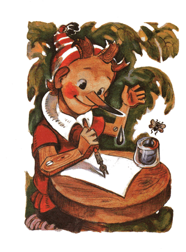

Pagi berikutnya Buratino terbangun, sehat dan ceria seolah tidak terjadi apa-apa.
Gadis berambut biru sudah menunggunya di halaman, duduk di meja makan kecil, yang dipenuhi perabotan boneka.
Wajahnya sudah segar, hidungnya yang mancung ke atas dan pipinya dipenuhi serbuk sari.
Buratino yang ditunggu-tunggu telah datang, dengan risih ia menyapih para kupu-kupu yang gemas itu:
- Iya aduh, kembali ke urusan masing-masing...
Mengamati si anak kayu dari ujung kepala ke ujung kaki, ia meringis. Ia menyuruhnya duduk di meja sambil menuangkan coklat hangat ke dalam cangkir mungil.
Buratino pun duduk di meja, satu kaki dilipat. Sepotong kue almond dia jejalkan ke mulutnya sekaligus dan langsung ditelan tanpa dikunyah.
Ke dalam toples berisi selai, dia tengglamkan jari-jemarinya, kemudian dia emut satu persatu dengan nikmatnya.
Di saat gadis itu balik badan, untuk melemparkan beberapa remah pada si kumbang tanduk tua, dia meraih teko dan sekaligus dia tenggak coklat itu dari ceratnya.
Tersedak, tumpahlah coklat itu ke taplak meja.
Lantas gadis itu berbicara padanya dengan tegas:
- Duduk yang benar, turunkan kakimu rendah-rendah di bawah meja. Jangan makan pakai tangan, untuk apa ada sendok dan garpu. /Sambil kesal ia menyapu-nyapu bulu mata/ Siapa yang mendidik kamu, kalau boleh tau?
- Kadang papa Carlo yang mendidik, kadang tidak ada.
- Mulai sekarang, saya yang bertanggung jawab untuk mendidikmu, sampai akhir hayat.
- "Itu namanya dikekang!" /pikir Buratino/
Di rerumputan sekitar rumah, si pudel Artemon berlari-lari mengejar burung kecil. Ketika mereka bertengger di pepohonan, kepalanya mendongak, melompat-lompat, menggonggong dan melolong.
- "Seru sekali mengejar burung" /pikir Buratino iri/
Duduk di meja makan dengan tertib, dia merinding sekujur tubuh.
Akhirnya sarapan pegal linu selesai. Gadis menyuruhnya menyeka noda coklat di hidungnya. Ia meluruskan lipatan dan pita di gaunnya, menggandeng tangan Buratino dan membawanya masuk ke dalam rumah; untuk mempraktikkan pendidikan.
Sedangkan si riang gembira pudel -Artemon berlari-lari di halaman dan menggonggong; burung-burung, mereka sama sekali tidak takut padanya, mereka berkicau riang; semilir angin bertiup menyenangkan di atas pepohonan.
- Lucuti pakaian sobekmu, mereka akan membuatkanmu jaket dan celana yang layak, /kata gadis itu/
Penjahit empat serangkai; master-tunggal, alias si lobster judes -Capitallo, burung Pelatuk abu berkuncir, kumbang Tanduk besar, dan si tikus petualang Lisetta; menjahit gaun bekas anak perempuan menjadi kostum anak laki-laki. Capitallo memotong, burung Pelatuk dengan paruhnya menusuk-nusuk dan menjahit, kumbang Tanduk dengan kaki belakangnya memutar benang, Lisetta mengapit dengan gigi.
Buratino sebenarnya malu memakai baju dari bekas gaun anak perempuan, tapi mau tidak mau dia harus ganti pakaian.
Hidung terisak-isak, dia sembunyikan empat koin emasnya ke dalam saku jaket baru.
- Sekarang silahkan duduk, letakkan tangan di depan. Jangan membungkuk. /gadis itu berkata dan mengambil sebatang kapur/ Kita akan belajar aritmatika... Di dalam saku kamu ada dua butir apel...
Buratino tersenyum geli.
- Ngarang, tak ada sebutirpun...
- Maksud saya, /gadis itu mengulangi dengan sabar/ seumpamanya, di dalam saku kamu ada dua butir apel. Seseorang mengambil satu butir apel itu darimu. Berapa butir apel kamu yang tersisa?
- Dua.
- Pikirkan dengan baik
Buratino mengernyit; Berfikir matang-matang.
- Dua...
- Kenapa dua?
- Aku tak akan sudi memberikan apelku pada si seseorang, meskipun dia ngajak berkelahi!
- Kamu tidak punya bakat dalam matematika, /kata gadis itu, merasa kasihan/ Kita belajar dikte. /dia mengangkat dua mata cantiknya ke arah loteng/
- Tulis... "Rosa aku suka Asor". Sudah? Sekarang baca frasa ajaib itu secara terbalik.
Kita tahu, bahwa si Buratino ini, melihat pena dan tinta saja belum pernah.
Begitu gadis berkata: "Tulis", saat itu pula hidungnya mencelup ke dalam wadah tinta dan sangat ketakutan, saat noda tinta di hidungnya menetes ke kertas.
Gadis mengepalkan dua tangannya, bahkan air matanyapun tumpah.
- Kamu ini nakalnya minta ampun, kamu harus dihukum!
Gadis melongok ke luar jendela.
- Artemon, bawa Buratino ke dalam lemari gelap!
Si jagoan Artemon tiba di depan pintu, memperlihatkan gigi putihnya. Dia raih jaket Buratino dan, berjalan mundur, menyeretnya ke dalam lemari gelap, dimana di pojoknya, di atas jaring, bergelantung seekor laba-laba besar. Dia kunci Buratino di dalam sana, lalu menggeram, untuk menakut-nakuti, lalu kembali mengejar burung-burung.
Gadis berhambur ke kasur boneka berkelambu dan mulai menangis, karena dia terpaksa harus berlaku kejam pada si anak kayu. Tapi apabila pendidikan sudah terlanjur dimulai, maka setiap proses harus dilalui sampai akhir.
Buratino ngomel-ngomel di dalam dalam lemari gelap:
- Dasar gadis idiot... dasar pengasuh anak, pikir saja... oleh kepala porslenmu, badanmu, buntelan kapas
Di dalam lemari itu terdengar suara mencicit tipis, seperti seseorang mengeratkan giginya yang kecil:
- Dengarkan, dengarkan...
Dia mengangkat hidung bernoda tinta-nya dan, samar terlihat, di loteng yang gelap, menggantung terbalik; si tikus-terbang
- Mau apa kau?
- Tunggu sampai malam, Buratino
- Syuh, syuh, /laba-laba berdesir di pojok/ jangan dekat-dekat dengan sarang kami, jangan menakut-nakuti lalat kami...
Buratino terduduk di atas pot pecah, bertopang pipi. Dia sudah menghadapi banyak kesulitan bahkan lebih buruk dari ini, dia marah hanya karena diperlakukan tidak adil.

- Beginikah cara mereka mendidik anak? Ini sih penyiksaan, bukan pendidikan... duduk tidak boleh begini, makan tidak boleh begitu... namanya anak-anak, bisa jadi, buku-ABC saja belum tamat... tapi dia langsung mengajar dengan tinta... sedangkan si jantan asyik mengejar burung; tidak apa-apa.
si tikus-terbang mencicit lagi:
- Tunggu sampai malam, Buratino, aku akan mengantarmu ke Negeri Idiot, di sana teman-temanmu sudah menanti; si kucing dan si rubah, sedang berbahagia dan bersenang-senang. Tunggu nanti malam.